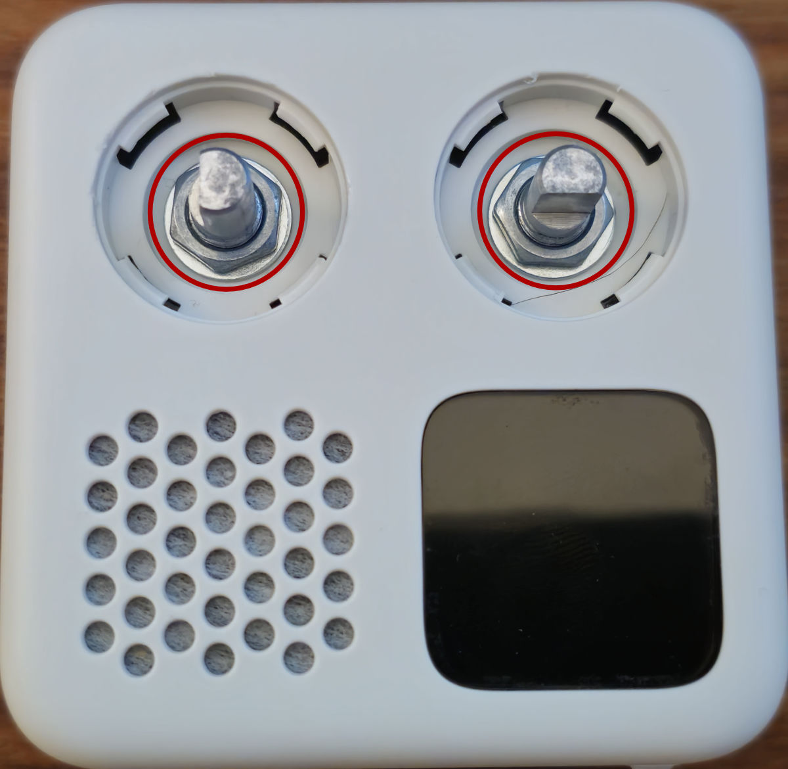
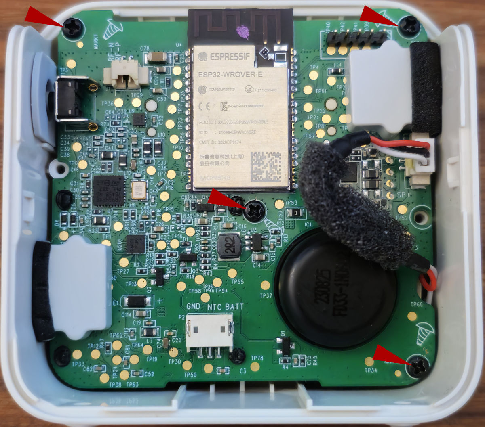
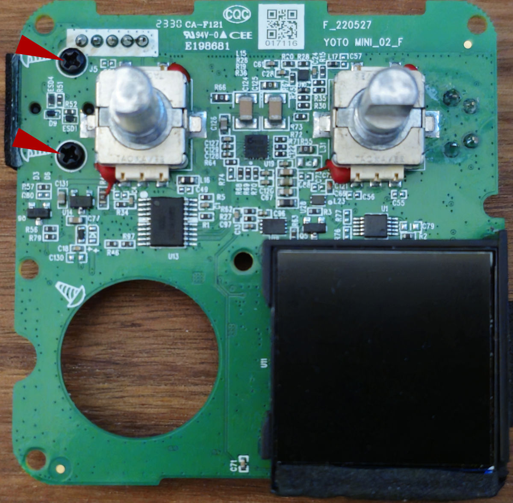
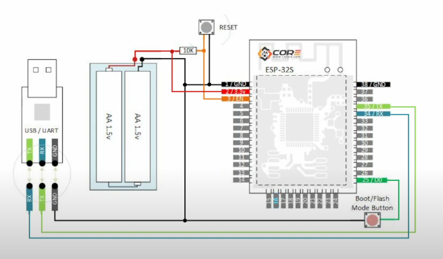
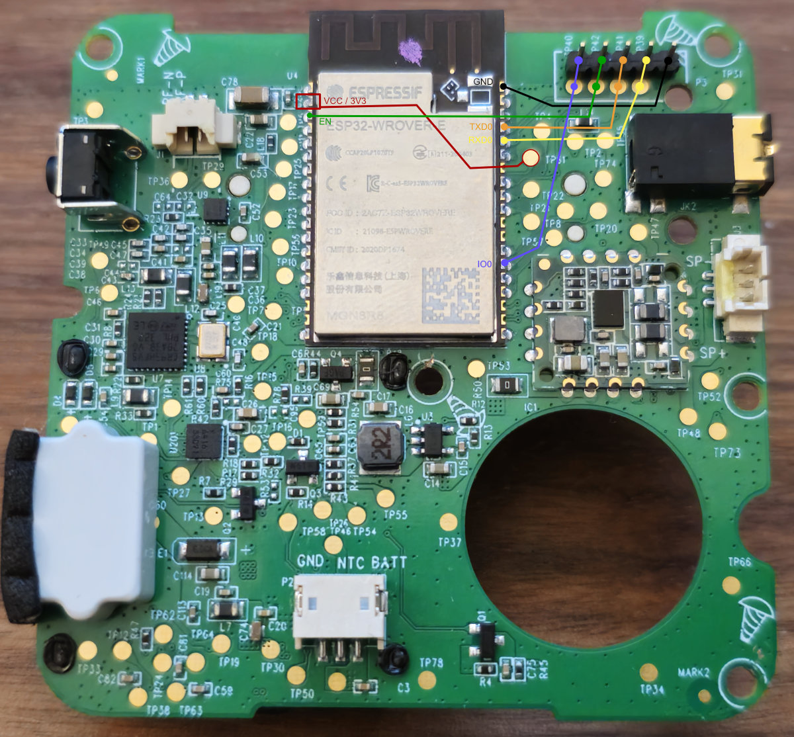

Dumping the ESP32 Firmware on a Yoto Mini v2 (2023)
- Follow the Battery Replacement guide from Yoto (steps 1-8)
- Pop off the two control knobs and remove the two 10mm nuts
 - Remove the 3 screws holding the board to the case
 -
Optional - After removing, flip the board and remove the headphone port cover (2 screws) 
-
Solder a 2mm header/connector (e.g. JST) to the pins and connect them to your serial device as follows
 
If using a raspberry pi, the following mapping should be used
| Header R->L | ESP32 - Pin | ESP32 - Label | Rasp Pi - Pin | Rasp Pi - Label |
|---|---|---|---|---|
| Pin 1 | Any GND (1, 38, etc) | GND | Any GND (6, 9, etc) | GND |
| N/A | 2 | 3V3 | 1 | 3V3 |
| Pin 4 | 3 | EN | 1 via 10k resistor | 3V3 + 10k ohm |
| Pin 5 | 25 | IO0 (zero) | GND via button | na |
| Pin 2 | 34 | RXD0 | 8 | TXD0 |
| Pin 3 | 35 | TXD0 | 10 | RXD0 |
- Enable UART (just hardware, not console)
- Install ESPTool
- Run ‘esptool.py -p /dev/ttyS0 read_flash 0 ALL yoto_mini_v2.bin’
- When “Failed to get PID…” appears do the following
- Press and hold Boot/Flash button
- Press and release Reset button
- Release Boot/Flash
-
Flash should start dumping (takes 10-15 mins)
-
Once you have the bin file, clone/install esp32_image_parser
-
Apply the following fixes (or use my forked version - aaronr8684/esp32_image_parser/tree/fixes_3_13_15)
-
Grab the partition table via
python esp32_image_parser.py show_partitions ../../yoto_mini_v2.bin
- Get the ELF files via
python esp32_image_parser.py create_elf ../../yoto_mini_v2.bin -partition ota_0 -output yoto_ota_0.elf
- Run again for ota_1
- Use a decompiler to read the ELF files (like Ghidra or IDA Pro)